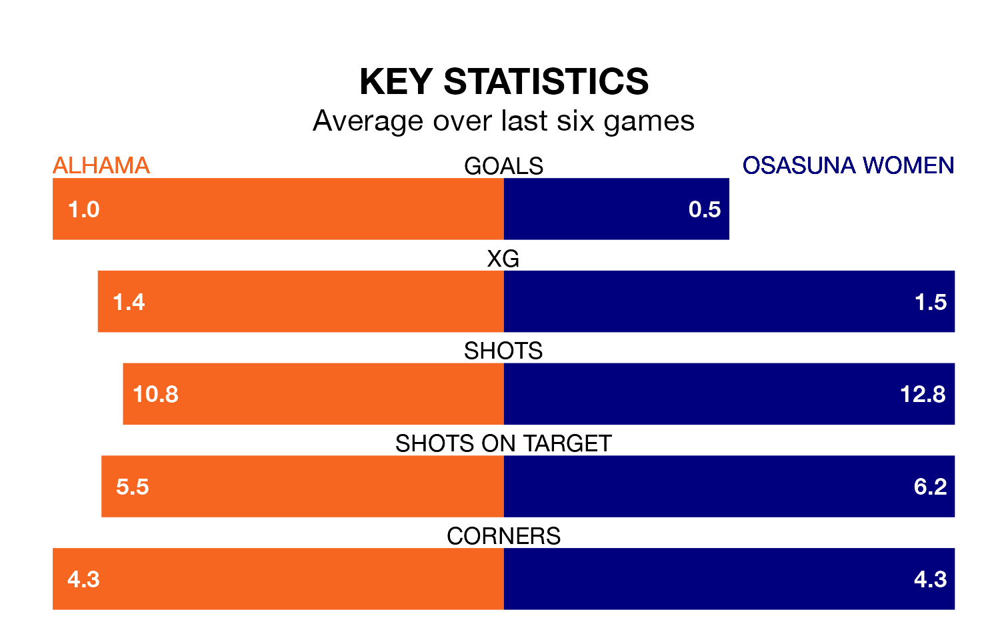

Osasuna Women make the journey to play Alhama on Sunday looking to pick up points to end their three-game losing streak.
Osasuna's struggles have left them with just three points from their last six Primera Federación Femenina matches, while their opponents have earned eight from a possible 18.
With 24 goals in 14 games so far this season, Alhama are the league's joint-third-highest scorers with 1.7 goals per game. And they are conceding fewer than average, letting in 14 goals at a rate of 1.0 per game.
Osasuna, meanwhile, are below average scorers, with 1.0 goal per game, compared to a league average of 1.2. They have also conceded 1.0 goal per game.
The home side are fourth in the table after 14 games, of which they have won eight and drawn three, earning 27 points.
The visitors are two places behind Alhama in sixth, with five wins and four draws putting them on 19 points.
Alhama's last match was on January 14, a 2-1 win against Logroño Women, with getting the goals for Alhama.
Osasuna lost 2-0 against Barcelona II Women last time out, also on January 14.
Updated: 14:53 (UTC), 16/01/24